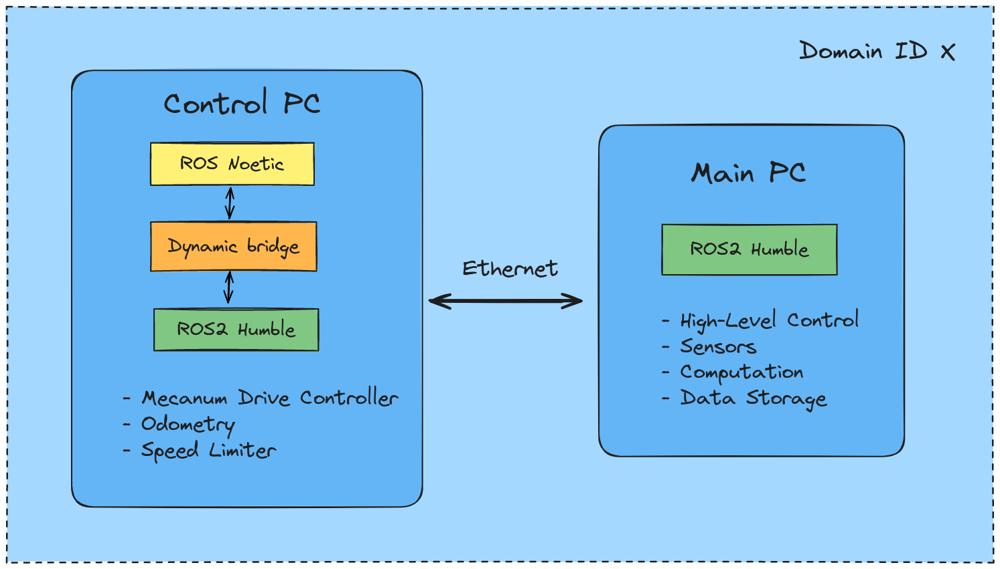
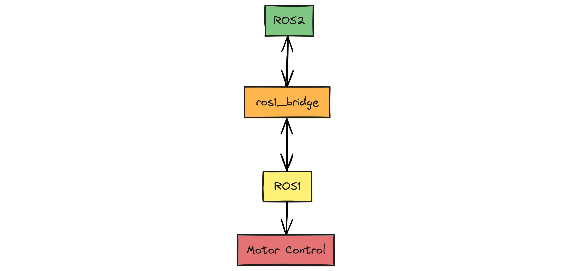

Installation
This section guides you through installing all the ROS1 and ROS2 packages required to get the robot up and running. The image below illustrates the software architecture of the MoMo robot. Currently, ROS2 drivers for the Maxon motors are unavailable, necessitating the use of two computers. The Control PC (an Intel NUC) handles low-level control and sends velocity commands to the robot base, while the Main PC (Board PC) manages high-level control and computation. In the future, once the drivers become available, we will consolidate all tasks onto the Main PC.

Please follow the installation steps mentioned below in your Control PC:
ROS1 Control
By following this section you will be able to control the robot and send velocity commands in ROS1. Once you are successful in doing this, follow the ROS2 Control (via ROS1 Bridge) section to be able to do the same in ROS2. Since the motor drivers are not yet available, it is necessary to set up the control first in ROS1 before moving to ROS2.
Install Ubuntu
Install Ubuntu 20.04 in the control PC. It is recommended to have at least 8 GB of RAM for running ROS1 and ROS2 simultaneously using the rosbridge.
Install ROS
Install ROS Noetic:
noetic/Installation/Ubuntu - ROS Wiki
Create a catkin_ws for ROS1.
Do not put these lines in .bashrc:
Instead manually source it whenever required. You can create an alias if you want in your .bashrc:
We do not want ROS1 to be sourced automatically when we open a terminal every time as it might create conflicts later when we use ros1_bridge with ROS2.
Clone the Repository
Clone the noetic branch of MoMo repository in your catkin_ws/src.
Install dependencies
Install ros_canopen and its dependencies, install the following ROS packages:
sudo apt-get install ros-noetic-canopen-* ros-noetic-control* ros-noetic-rqt-controller-manager ros-noetic-joint-state-controller ros-noetic-velocity-controllers ros-noetic-effort-controllers ros-noetic-joint-state-publisher-gui ros-noetic-std-srvs
Run the following command to update ROS dependency tree:
Install required packages
Install the following packages:
sudo apt-get install ros-noetic-amcl* ros-noetic-move-base* ros-noetic-map-server* ros-noetic-robot-pose-ekf* ros-noetic-twist-mux* ros-noetic-teleop*
And also:
Build your workspace
Build your catkin_ws:
Connect the CAN cable
Connect the CAN cable from the robot to the control PC and run the following commands in the terminal:
To check if it is up:
Configure the joystick
Connect the joystick with the control PC to be able to control the robot using the joystick in ROS1. (Check if it is working by following instructions in this link)
Control the robot
Open two terminals and source ROS1 in both of them and run the following on after the another in following sequence:
Now you can move the robot using the joystick, velocity commands are sent to the robot over the cmd_vel topic.
ROS2 Control (via ROS1 Bridge)
Install ROS2
Install ROS2 Humble from source in the control PC.
Ubuntu (source) — ROS 2 Documentation: Humble documentation See the Note below.
Clone the ros1_bridge package in your ros2_ws/src:
Note: During the build step run this command instead of the command from the official tutorial:
Do not put the following in the .bashrc:
You can create an alias if you want in your .bashrc (optional):
Uninstall package
You then need to uninstall manually the controller_manager_msgs package from ROS noetic, starting first with the share directory:
Repeat these steps with include directory:
Build ros1_bridge
Build ros1_bridge package: (You need to source both ROS1 and ROS2 for this)
cd ~/ros2_humble
# Source ROS1 first
# Then source ROS2 in the same terminal, and then:
colcon build --symlink-install --packages-select ros1_bridge --cmake-force-configure
More information about ros1_bridge can be found here.
Reinstall package
Reinstall the controller_manager_msgs package:
Source ROS1 and ROS2
Run the ROS1 control as mentioned above and keep it running. Open another terminal and source ROS1 and ROS2 in sequence (in the same terminal), and run the following:
Publish to topic
In another terminal, source ROS2 only and then publish to the /cmd_vel topic, and the robot should move. For e.g.:
ros2 topic pub --rate 1 /turtle1/cmd_vel geometry_msgs/msg/Twist "{linear: {x: 0.0, y: 0.0, z: 0.0}, angular: {x: 0.0, y: 0.0, z: 1.8}}"

Congratulations! Now you are able to control the robot in ROS1 as well as in ROS2 from the control PC. Now in the next section we add startup scripts to simplify the startup process and setup the SSH connection between the control PC and the Main PC connected via ethernet cable so that we can control the robot from the Main PC in ROS2 Humble without having to enter the password everytime we SSH into the Control PC from the Main PC.
Setup SSH connection
Setup an SSH connection between the Main PC (board computer) and the Control PC (Intel NUC) so that you don't have to enter password every time you want to SSH into the NUC. This is also a necessary step in case of using the bash scripts while starting the robot.
Generate SSH Key Pair on the Main PC:
Press Enter to accept the default file location and optionally set a passphrase.
Copy Public Key to the NUC using: (This should be executed in the Main PC)
Replace username with your NUC's username and NUC_IP_Address with the NUC's IP address. (To know IP address: hostname -I)
Now you should be able to SSH into the NUC from the board computer without entering the password using:
Clone MoMo Repository in Main PC
Run the following in the Main PC to clone the MoMo repository humble branch in your ros2_ws/src:
Install joystick package
Install the joystick ros package to teleoperate the robot using a joystick from the Main PC in ROS2. On the Main PC run the following command:
Install catmux
Catmux is a command-line tool used to create and manage Tmux sessions using YAML configuration files.
Run this command in the Main PC to install catmux :
Add alias for startup and shutdown
We setup some aliases in the Main PC so that we don't have to type long commands everytime working with the robot.
Set the path for yml files: (change if it looks different for you)
Set up aliases for starting, stopping and shutting down the robot in the Main PC:echo "alias wakeupmomo='catmux_create_session $MOMO_PATH/wakeupmomo.yml --session_name wakeupmomo'" >> ~/.bashrc
echo "alias stopmomo='catmux kill-session -t wakeupmomo'" >> ~/.bashrc
echo "alias sleepmomo='catmux_create_session $MOMO_PATH/sleepmomo.yml'" >> ~/.bashrc
(Note: Read comments in the wakeupmomo.yml and sleepmomo.yml in the MoMo repository and set variables according to your system)
Building the documentation locally (for developers only)
The documentation is managed by Mkdocs.
Install the following:
pip install mkdocs
pip install mkdocs-material mkdocs-material-extensions --upgrade
pip install pillow cairosvg --upgrade
To view the documentation, locate your terminal where the mkdocs.yml file is present and run: